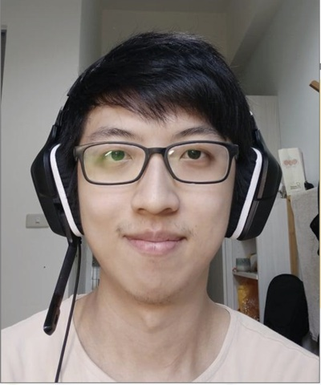
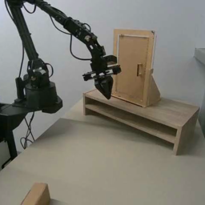
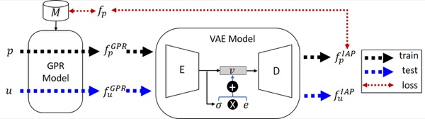
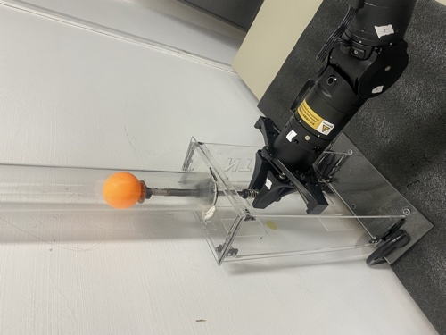
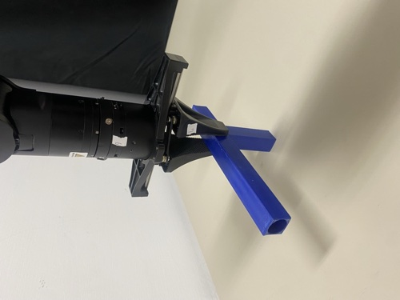
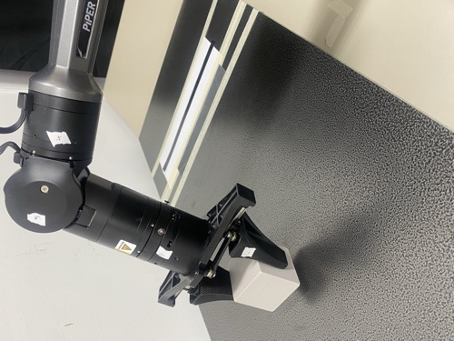
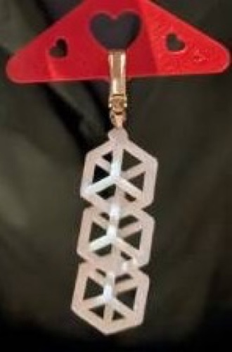

Yu (Charlie) Chan
Seeking PhD position for 2027 Fall!
I am a research assistant at the Robot Learning Lab,
National Taiwan University, advised by Prof. Shao-Hua Sun.
I am broadly interested in robot learning and manipulation — tactile sensing for manipulation
among other things — and I am still exploring which problems to commit to.
I received my M.S. in Artificial Intelligence from National Yang Ming Chiao Tung University (NYCU)
with the Presidential Award, advised by Prof. Yu-Chee Tseng
and Prof. Jen-Jee Chen. Before returning to research, I spent three years in industry —
Wi-Fi firmware at MediaTek and embedded ML at Novatek — and co-founded
Tera Thinker, an AI education startup.
charlie88162@gmail.com /
GitHub /
CV
|

|
Research
I don't have a single research thread yet. So far I have worked on generative models for Wi-Fi
fingerprint inpainting (M.S.), real-robot evaluation of video-based planning under partial
observability, and tactile representation learning for manipulation — in particular whether
gains at the perception level carry over to policy-level success. What I bring is a habit from
firmware and embedded ML: I like owning the full stack — hardware, data collection, evaluation —
and finding out what actually holds up on a real robot. I am broadly interested in robot learning
for manipulation and open to where the problems lead.
|
|

|
Implicit State Estimation via Video Replanning
Po-Chen Ko, Yu Chan, Yu-Hsiang Fu,
Chu-Rong Chen, Hung-An Chen, Shao-Xiang Yuan, Hsien-Jeng Yeh,
Wei-Chiu Ma,
Yilun Du,
Jiayuan Mao,
Shao-Hua Sun
Under review at CoRL 2026
arXiv
A video-planning framework that feeds interaction-time data back into planning: it updates
model parameters online and filters out previously failed plans, so the planner adapts in
partially observed environments without explicitly modeling the unknown state variables.
I led the real-world robot experiments in the CoRL submission (the arXiv v1 is an earlier,
simulation-only version).
|
|

|
Learning-Based WiFi Fingerprint Inpainting via Generative Adversarial Networks
Yu Chan, Pin-Yu Lin, Yu-Yun Tseng, Jen-Jee Chen,
Yu-Chee Tseng
IEEE ICCCN 2024
arXiv
Filling in Wi-Fi fingerprints for unsurveyed regions so RSS-based indoor positioning works
where site surveys are incomplete. Unlike image inpainting, field maps have arbitrary shapes and
continuous query points, so we train directly on the given map: a GPR+VAE model (IAP) and a
fully learned model (I2AP) that captures both inter- and intra-AP correlations, with a
conditional-GAN discriminator on (location, fingerprint) pairs. I2AP outperforms GPR-based
inpainting in both interior and outward-missing scenarios and improves positioning accuracy.
|
Open Source & Hands-On
Lab imitation-learning infrastructure.
Built RLLxLerobot, the lab's end-to-end
imitation-learning stack: teleoperation, dataset recording, training and evaluation scripts,
waypoint tooling, and hardware configuration for an AgileX Piper arm with a ROBOTIS OMY leader.
LeRobot hardware plugins.
Authored and published the
AgileX Piper follower
(safety-first: no startup lunge, slew-rate limiting), the
ROBOTIS OMY-L100 leader
(direct Dynamixel Protocol 2.0, no ROS 2), and an
OMY→Piper retargeting processor;
Dynamixel motor support merged upstream into
Hugging Face LeRobot.
3D printing & fabrication.
I design and fabricate the physical side of the lab's real-robot experiments — custom fixtures,
mounts, and task objects for the CoRL 2026 submission, and a
stiffness tester for the Piper gripper
(published on MakerWorld). I also design for fun outside the lab; the
Cube Earring is one of my personal
MakerWorld designs.




|
Experience
Research Assistant, Robot Learning Lab, National Taiwan University (2026–present)
AI Application Engineer, Novatek (2024–2026)
Wi-Fi R&D Software Engineer, MediaTek (2022–2024)
Co-Founder, Tera Thinker (2021–present)
|
Selected Engineering Work
Wi-Fi ranging firmware (MediaTek).
Owned the Fine Timing Measurement (FTM) feature end-to-end: rebuilt the ranging firmware,
improving distance accuracy from 2–3 m to within 1 m on production Wi-Fi chipsets.
Represented MediaTek at the Wi-Fi Alliance PlugFest (San Francisco); 2× company vAward.
Embedded real-time SELD (Novatek).
Designed and optimized a dual-channel sound event localization and detection model and its
inference pipeline for low-latency deployment on embedded systems.
Co-founded an AI education startup: adaptive question recommendation, knowledge tracing,
and automated essay scoring, now reaching 40% of Taiwan's high schools.
|
Education
M.S. in Artificial Intelligence, National Yang Ming Chiao Tung University
(NYCU; formerly National Chiao Tung University) (2020–2022) —
GPA 4.26/4.30, Presidential Award; exchange semester at University of Agder, Norway (Spring 2022)
B.S. in Electrical Engineering and Computer Science, National Tsing Hua University (2015–2019)
|
|